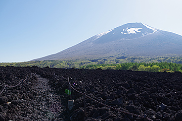

魅力ポイント：焼け走り溶岩流
岩手県八幡平市に広がる溶岩が積み重なってできた。 厳しい地形に負けずに生きる地衣類の観察もおすすめ。
展望台から見る岩手山
もし晴れていれば、溶岩流展望台から素晴らしい景色を 見ることができるでしょう。
焼け走り溶岩流散策
1700年代に噴火し、岩手山北東斜面に広がる 安山岩の黒い岩石体。その中を歩くことができます。 国立公園特別保護地区、国指定の特別天然記念物に 指定されたこの場所を歩いて見ませんか？

焼走りの湯
アルカリ性の天然温泉、入浴後には休憩室でゆっくりと 過ごすこともできます。地元の食材たっぷりのお食事を とることができる食堂もご利用することができます。 散策後の疲れた体を癒しにぜひご利用ください。


ページ作成者の紹介
トップへ戻る